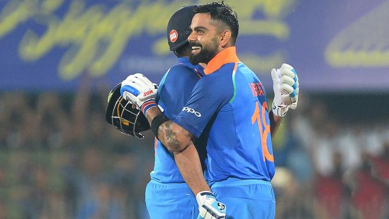

Breaking News


কোথায় ছিলেন এই ইমরুল!
Staff Correspondent | Update: 13:15, May 20, 2018
0Like
এই উদ্যাপনটা অনেক আগে থেকেই বিখ্যাত হয়ে আছে বেবেতোর সৌজন্যে। ১৯৯৪ বিশ্বকাপে গোল করে সন্তানকে অভিনব কায়দায় উৎসর্গ করেছিলেন ব্রাজিলিয়ান ফুটবলার। ইমরুল কায়েস ব্যাটসম্যান। তিনি গোল করতে পারেন না, তবে সেঞ্চুরি তো করতে পারেন। আজ সেঞ্চুরি করে তাঁর উদ্যাপনটা হলো বেবেতোর মতোই। ড্রেসিংরুমের দিকে তাকিয়ে ব্যাটটা হাতে নিয়ে দোলাতে থাকলেন। মোবাইলের আলো জ্বেলে ইমরুলকে অভিনন্দন জানাল দর্শকেরা। আজ সব আলো তো ইমরুলকেই ঘিরে! নয় মাস পর ‘হোম অব ক্রিকেটে’ আন্তর্জাতিক ক্রিকেট ফিরেছে। সেটিকে অভ্যর্থনা জানাতে দর্শকদের আগ্রহের কমতি নেই! হেমন্তের নরম বিকেলে আয়েশ করে খেলা দেখতে আসা দর্শকদের হতাশ করেছেন বাংলাদেশের বেশির ভাগ ব্যাটসম্যান। ব্যতিক্রম শুধু ইমরুল কায়েস। বাঁহাতি ওপেনার নাকি নিজের দিকে সব আলো কেড়ে নিতে পারেন না। আজ অন্তত এটি বলার উপায় নেই। তাঁর ১৪৪ রানের দুর্দান্ত ইনিংসটা বাংলাদেশকে এনে দিয়েছে জিম্বাবুয়ের বিপক্ষে ৮ উইকেটে ২৭১ রানের স্কোর। ইমরুল প্রায়ই নিজেকে বাংলাদেশের সবচেয়ে ‘দুর্ভাগা ক্রিকেটার’ হিসেবে দাবি করেন। তিনি যেন ‘দুয়োরানির ছেলে’! বর্তমান দলে যে ছয়জন খেলোয়াড়ের ১০ বছর আন্তর্জাতিক ক্রিকেট খেলার অভিজ্ঞতা আছে, ইমরুল তাঁদের একজন। বাকি পাঁচজন দেশের ক্রিকেটে বড় তারকা হলেও ইমরুলের ভাগ্যে তারকা তকমা জোটেনি। না জুটুক, তাতে তাঁর আপত্তি নেই। বাঁহাতি ওপেনারের চাওয়া একটাই—দলে নিয়মিত হওয়া। ১০ বছর আন্তর্জাতিক ক্রিকেটে কাটিয়ে দেওয়ার পরও দলে জায়গা পাওয়া নিয়ে চিন্তা করতে হয়! অথচ পরিসংখ্যান তাঁর পক্ষেই কথা বলে। ২০১৫ সালের নভেম্বর থেকে এখন পর্যন্ত ১৮ ওয়ানডে খেলার সুযোগ পেয়েছেন, গড় ৪৭.২৫। এই সময়ে খেলা বাংলাদেশের ব্যাটসম্যানদের মধ্যে গড়ে তাঁর ওপরে শুধু আছেন তামিম ইকবাল (৬১.৬৪)। তবুও প্রায় প্রতিটি সিরিজে বা টুর্নামেন্টে দলে থাকতে তাঁকে যথেষ্ট কাঠখড় পোহাতে হয়। তাতে ইমরুলেরও দায় আছে। অন্তত ওয়ানডে দলে তাঁর ব্যাটে দ্যুতি যেন সেভাবে ছড়ায় না। টেস্ট ওপেনারের তকমাটা যে ছিঁড়ে ফেলে দেবেন, সেই রকম ইনিংসও খুব বেশি খেলা হয়নি। বাবা হওয়া নাকি একজন পুরুষকে বদলে দেয়। পুরুষ দায়িত্বে অভিভাবক হয়ে ওঠে। আজ দুই দুইবার ভীষণ বিপদে পড়ে যাওয়া, সাকিব-তামিমবিহীন বাংলাদেশকে সেই অভিভাবকত্বই শুধু করলেন না, ইমরুল খেললেন নিজের খোলস ছেড়ে বেরিয়ে আসার এক ইনিংস। ১৩ চার ও ৫ ছক্কার ইনিংসটা ঠিক পরিসংখ্যানে বোঝা যাবে না। আজ যা করতে চেয়েছে, ইমরুল ঠিক তা-ই করেছেন। যেন রাজদণ্ড হাতে নিয়ে শাসন করছেন কোনো রাজা! এই ইনিংসটাই ওয়ানডে ক্যারিয়ারে ইমরুলের মোড় ঘুরিয়ে দেয় কি না, সেটাই এখন দেখার। সবশেষ এশিয়া কাপের দলেও আকস্মিকভাবে ঢুকে পড়েছিলেন। সেদিন অপরাজিত ৭২ রানের ইনিংস খেলার পরও আবার কিছুটা নড়বড়ে দেখাচ্ছিল। কিন্তু আজ যেন অন্য এক ইমরুলকে দেখা গেল। কী প্রত্যয়ী, আত্মবিশ্বাসে ফুটন্ত! এত দিন কোথায় ছিলেন এই ইমরুল! ইমরুলের মনে আরও প্রশান্তি এনে দিয়েছে তাঁর নবজাতক সন্তান। ঘরে নতুন অতিথি আসার পর খেলতে নেমেছেন প্রথম আন্তর্জাতিক ম্যাচ। আর সেটিতেই সেঞ্চুরি। যেনতেন সেঞ্চুরি নয়, দলকে বাঁচানো সেঞ্চুরি। এই সেঞ্চুরি উদ্যাপনে থাকল ইমরুল-পুত্র। সতীর্থ ব্যাটসম্যানরা যখন ব্যাটের কানায় লেগে উইকেটকিপার ব্রেন্ডন টেলরের গ্লাভসবন্দী হচ্ছেন ইমরুল তখন স্বচ্ছন্দে এগিয়ে গেছেন। কখনো পেছনের পায়ে পাঞ্চ করে কাভার দিয়ে বাউন্ডারি তো, সামনের পায়ে বোলারের মাথার ওপর দিয়ে দৃষ্টিগ্রাহী ছক্কা। আবার সেই ইমরুলই শৌর্যের প্রতীক হয়ে পুল, স্লগ সুইপ কিংবা রিভার্স সুইপে বাউন্ডারি মারছেন। প্রিয় ফ্লিকে যদিও বেশি রান তুলেছেন। ভুল বলতে পঞ্চম ওভারের শেষ বলে ত্রিপানোকে ফ্লিক করতে গিয়ে স্কয়ার লেগে বাউন্ডারির সীমানার কাছে অল্পের জন্য বেঁচে গেছেন (৭ রানে)। শক্তির জায়গা লেগ সাইডেই বেশি খেলেছেন, সেঞ্চুরির প্রায় ৬৮ শতাংশ এসেছে অনসাইড থেকে। তিন অঙ্ক ছুঁয়েই ইমরুলের ব্যাট হয়ে উঠেছে আরও ধারালো। প্রায় ৮৫ স্ট্রাইক রেট তাই ইনিংস শেষে হয়ে গেল ১০২.৮৫। সেঞ্চুরির পর করা ৪৪ রান করেছেন মাত্র ২২ বলে। এই ৪৪ রানের ৩৪ এসেছে বাউন্ডারি থেকে। জার্ভিসকে যখন কাভার দিয়ে উড়িয়ে মারতে গিয়ে মুরের ক্যাচ হলেন, ইমরুল করে ফেলেছেন নিজের ক্যারিয়ারে তো বটেই, ওয়ানডেতে দেশের মাঠে বাংলাদেশের ব্যাটসম্যানদের মধ্যে সর্বোচ্চ রানটাও। আউট হওয়ার আগ পর্যন্ত ছয় সতীর্থের সঙ্গেই জুটি গড়ার চেষ্টা করেছেন। তৃতীয় উইকেটে মুশফিকের সঙ্গে ৪৯ রানের পর ৭১ রানের জুটি হয়েছে মোহাম্মদ মিঠুনের সঙ্গে। তবে ১৩৯ রানে ৬ উইকেট পড়ে যাওয়ার পর সবচেয়ে কার্যকরী জুটিটা হয়েছে সপ্তম উইকেটে। ইমরুল-সাইফউদ্দিনের ১১৫ বলে রেকর্ড ১২৭ রানের জুটি বাংলাদেশকে আজ উদ্ধার করেছে। সেঞ্চুরি নিয়ে ইমরুলের একটা দুঃখ আছে। ওয়ানডেতে আগে যে দুটি সেঞ্চুরি করেছেন (নিউজিল্যান্ড ও ইংল্যান্ডের বিপক্ষে), দুটিই বৃথা গেছে! সেঞ্চুরির পরও দল হেরেছে। আজ বৃথা গেলে ইমরুলের দুঃখের শেষ থাকবে না! মাশরাফিরা নিশ্চয়ই এত সুন্দর একটা ইনিংস বৃথা যেতে দেবেন না।
৩২৩ রানও ভারতের কাছে কিছুই না!

৩২৩ রানের লক্ষ্যও ভারতের কাছে সামান্যই! না হলে কি আর এই রান তুলতে ভারতের প্রয়োজন হয় মাত্র ৪২.১ ওভার। ওয়েস্ট ইন্ডিজ ৩২২ রান তুলে দ্রুত শিখর ধাওয়ানকে তুলে নেওয়ার পর ম্যাচের খোঁজ যাঁরা রাখেননি, অবাক হবেন জেনে, ভারত সিরিজের প্রথম ওয়ানডে জিতেছে ৪৭ বল আর ৮ উইকেট হাতে রেখে। ওপেনার রোহিত শর্মা ও অধিনায়ক বিরাট কোহলি দুজনের ব্যাটে ওয়েস্ট ইন্ডিজের বড় রানের বাধাটা অনায়াসে পার হয়েছে ভারত। ১১৭ বল খেলে ১৫২ রানে অপরাজিত ছিলেন রোহিত। আর ১০৭ বল খেলে কোহলির সংগ্রহ ১৪০। দুজনে মিলে ২৯২ রান করলে আর কী লাগে! অথচ ইনিংসের দ্বিতীয় ওভারেই শিখর ধাওয়ানকে ফিরিয়ে ভয়ই ধরিয়ে দিয়েছিল ক্যারিবীয়রা। ওশানি থমাসের বলে ধাওয়ান যখন বোল্ড হয়ে ফিরে যান, ভারতের স্কোরবোর্ডে সংগ্রহ মাত্র ১০। ওয়ান ডাউনে নেমে কোহলি ২৪৬ রানের বিশাল জুটি গড়লেন রোহিতের সঙ্গে। আর এতেই তৈরি হয়ে যায় জয়ের ভিত। দলীয় ২৫৬ আর ব্যক্তিগত ১৪০ রানে কোহলি ফিরে গেলে বাকি পথটুকু আম্বাতি রাইডুকে নিয়ে পাড়ি দিয়েছেন রোহিত। ভারতীয় এই ওপেনারের ইনিংসে ১৫ চার ও আটটি ৬ আছে। ২৬ বল খেলে ২২ রানে অপরাজিত ছিলেন রাইডু। কোহলিই পাল্টা আক্রমণে পথ দেখিয়েছেন। ২১টি চার ও ২ ছক্কার ইনিংসে ভারত অধিনায়ক ওয়ানডেতে পেয়ে গেলেন ৩৫ নম্বর সেঞ্চুরি। আন্তর্জাতিক ক্রিকেটে ৬০টি সেঞ্চুরি হয়ে গেল কোহলির! কী অবিশ্বাস্য গতিতে এগোচ্ছেন! এর আগে শুরুতে টসে হেরে ব্যাট করতে নেমে শিমরন হেটমায়ারের সেঞ্চুরিতে ৮ উইকেটে ৩২২ রান তোলে ওয়েস্ট ইন্ডিজ। চন্দরপল হেমরাজের উইকেট দলীয় ১৯ রানের মাথায় হারালেও কাইরেন পাওয়েল ও শাই হোপে ওয়েস্ট ইন্ডিজের ইনিংস বেশ কিছুটা পথ এগিয়ে দিয়ে যান। ৬৫ রানের এই জুটিতে পাওয়েলের অবদান ৪১ আর হোপের ২১। দলীয় ৮৪ রানে ব্যক্তিগত ৫১ রান করে ফেরেন পাওয়েল। এই ভিত্তির ওপর দাঁড়িয়ে দলীয় সংগ্রহটাকে টেনে নিয়ে যাওয়ার দায়িত্বটা অবশ্য পালন করতে পারেননি মারলন স্যামুয়েলস আর শাই হোপ। স্যামুয়েলস ফেরেন শূন্য রানে। ১১৪ রানে ৪ উইকেট হারিয়ে বসা ওয়েস্ট ইন্ডিজকে পথ দেখান হেটমায়ার। মাত্র ৭৮ বলে ১০৬ রানের দারুণ এক ইনিংস খেলেন তিনি। তাঁর ইনিংসে ছিল ৬ চার আর ৬ ছক্কা। হেটমায়ার আজ এক রেকর্ডের মালিক হয়েছেন। সেটি ওয়েস্ট ইন্ডিজের হয়ে সবচেয়ে কম ইনিংস খেলে তিনটি সেঞ্চুরির। এর আগে এই রেকর্ড ছিল ভিভ রিচার্ডসের। ১৬ ইনিংস খেলে নিজের তৃতীয় সেঞ্চুরি পেয়েছিলেন ক্যারিবীয় গ্রেট। হেটমায়ার পেয়েছেন ১৩ ইনিংস খেলেই। ওয়েস্ট ইন্ডিজের ইনিংসের শেষটা আসে রোভমান পাওয়েল, জেসন হোল্ডার, দেবেন্দ্র বিশু আর কেমার রোচের ব্যাটে। পাওয়েল করেন ২৩ বলে ২২, হোল্ডার ৪২ বলে ৩৮। তবে বিশু আর রোচ সবচেয়ে বেশি চমকে দিয়েছেন ভারতীয় বোলারদের। শেষ উইকেট জুটিতে এই দুজন স্কোরবোর্ডে যোগ করেন ৪৪ রান। বিশু ২৬ বলে ২২ আর রোচ ২২ বলে ২৬ করে ক্যারিবীয় ইনিংস ৩২২-এ নিয়ে যান। ভারতীয় বোলারদের জন্য আজকের দিনটা মোটেও ভালো যায়নি। প্রায় প্রত্যেকেই ছিলেন খরুচে। মোহাম্মদ শামি ৮১ রান দিয়ে নিয়েছেন ২ উইকেট। উমেশ যাদব ১০ ওভারে ৬৪ রান দিয়ে ছিলেন উইকেটশূন্য। খলিল আহমেদ নিয়েছেন ১ উইকেট। ভারতীয়দের মধ্যে সেরা ছিলেন যুজবেন্দ্র চাহাল। ১০ ওভারে ৪১ রানে দিয়ে তিনি নিয়েছেন ৩ উইকেট। কিন্তু ভারতের ব্যাটিং তারকারা প্রত্যেকে একেকজন এত বড় মহিরুহ, এই রানটাও বানিয়ে ফেললেন মামুলি!
রোনালদোর চার শর দিনেই থামল জুভেন্টাস!
মাইলফলকটা ছুঁতে পারতেন ম্যাচের ১৪তম মিনিটেই। কিন্তু ‘খলনায়ক’ হয়ে দাঁড়ায় জেনোয়ার ক্রসবার। হুয়ান কুয়াদ্রাদোর ক্রস থেকে হেড করেছিলেন ক্রিস্টিয়ানো রোনালদো। ক্রসবার সেই হেড রুখে দিয়ে ধৈর্যের পরীক্ষা নিল রোনালদোর। জুভেন্টাস সমর্থকেরা সম্ভবত টের পেয়েছিলেন। এই ম্যাচেই হয়ে যাবে। গ্যালারি থেকে তাই রোনালদোর প্রতি সমর্থনের বৃষ্টি ঝরেছে। তুরিনের ‘বুড়ি’দের এই সমর্থন গোলে অনূদিত করতে রোনালদো সময় নিয়েছেন চার মিনিট। ম্যাচের ১৮তম মিনিটে জুভ উইংব্যাক হোয়াও ক্যানসেলোর শট আরেক খেলোয়াড়ের পায়ে লাগলেও ঝাঁপিয়ে পড়ে রুখে দিয়েছিলেন জেনোয়া গোলরক্ষক। কিন্তু বলটা নিয়ন্ত্রণে রাখতে পারেননি। ফাঁকায় বল পেয়ে আলতো টোকায় তা জালে পাঠিয়ে রোনালদো গড়লেন মাইলফলক। ইউরোপের শীর্ষ পাঁচ লিগের মধ্যে প্রথম খেলোয়াড় হিসেবে চার শ গোল! কিন্তু জুভেন্টাস পারেনি। না, হারেওনি। তবে দ্বিতীয়ার্ধে গোল হজম করায় জয়রথ থেমেছে। জেনোয়ার সঙ্গে ১-১ গোলে ড্র করে নিশ্চিত ৩ পয়েন্টের বদলে মাত্র ১ পয়েন্ট পেয়েছে মাসিমিলিয়ানো অ্যালেগ্রির দল। ড্র করায় কাটা পড়ল ২ পয়েন্ট। এবারের মৌসুমে জুভেন্টাসের পারফরম্যান্স দেখলে এই ২ পয়েন্ট হারানোতেও ভ্রু কুঁচকে যাবে। এই মৌসুমে জুভেন্টাস কালই যে প্রথম পয়েন্ট হারাল! সিরি আ-তে টানা ৮ ম্যাচ জয়ের পর নবম ম্যাচে এসে পয়েন্ট ভাগাভাগি করল দলটি। সব মিলিয়ে টানা ১০ ম্যাচ জয়ের পর থামল জুভদের জয়রথ। তবে সিরি আ-তে নিজের পঞ্চম গোল তুলে নিয়ে রোনালদো ঠিকই ইতিহাস গড়েছেন স্বাগতিক সমর্থকদের সামনে। ম্যানচেস্টার ইউনাইটেডের হয়ে ইংলিশ প্রিমিয়ার লিগে করেছিলেন ৮৪ গোল। রিয়াল মাদ্রিদে যোগ দিয়ে লা লিগায় করেছেন ৩১১ গোল। আর এই মৌসুমে জুভেন্টাসে যোগ দিয়ে ইতালির শীর্ষস্থানীয় লিগে তাঁর গোলসংখ্যা দাঁড়াল ৫—সব মিলিয়ে ৪০০ গোল। ইউরোপের শীর্ষ পাঁচ লিগে যা আর কারও নেই। লিওনেল মেসি অবশ্য রোনালদোর চেয়ে খুব বেশি পিছিয়ে নেই। চিরপ্রতিদ্বন্দ্বীর চেয়ে মাত্র ১০ গোল পিছিয়ে বার্সেলোনা তারকা (৩৯০ গোল)।


© All Rights Reserved
Prothom Alo 1998 - 2018
Editor & publisher: Matiur Rahman.
CA Bhaban, 100 Kazi Nazrul Islam avenue, Karwan Bazar, Dhaka 1215
Phone: 8180078-81, Fax: 9130496, E-mail: info@prothom-alo.info
Reproduction of any content,
news or article published on this website is
strictly prohibited.Privacy